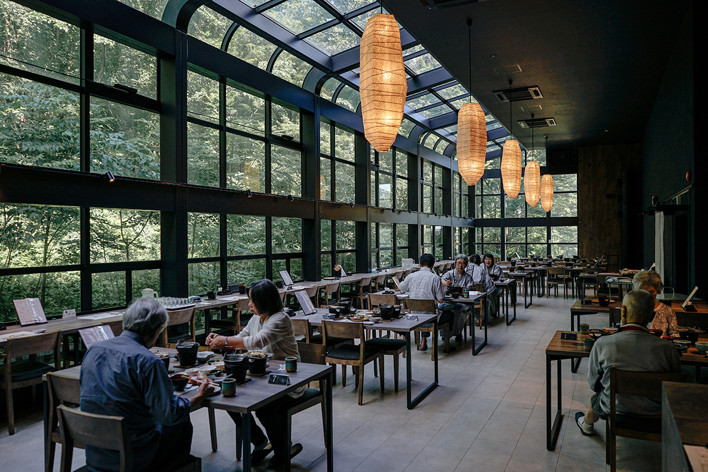
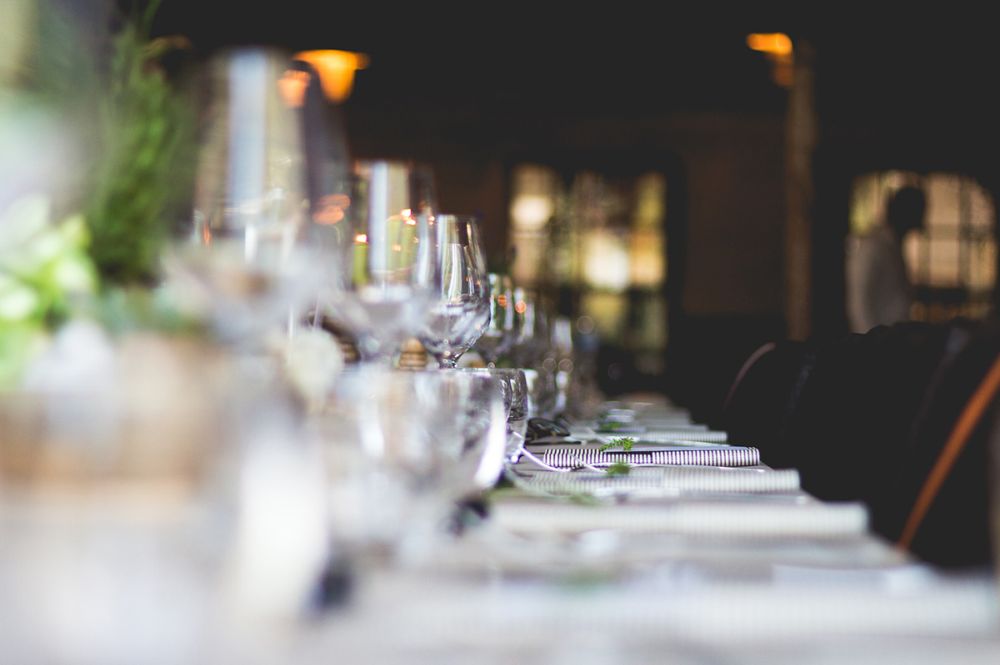
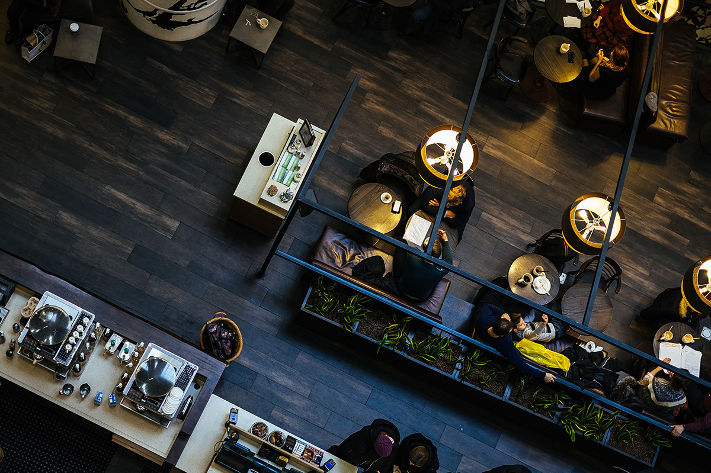
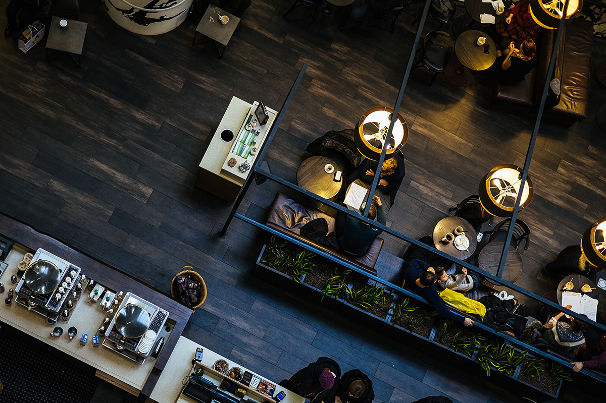
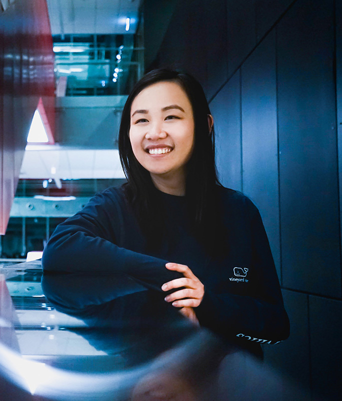

Signature 21
  

Our Chef

Appetizers
-
Cheese Plate
Assorted artisan cheeses, fig jam, fresh breads 10
-
Sea Scallops
Avocado, frisee, and key lime vinaigrette 11
-
Prosciutto
Balsamic poached pear, walnut, arugula, and chèvre 9
-
Yellowtail Sashimi
Miso, cucumber, pickled radish, and tamari 11
-
Curried Calamari
Yellow curry and jasmine rice 10
-
Duck Confit Spring Rolls
Plum ginger sauce 9
-
Mussels
Tomato, garlic, and white wine broth 9
-
Smoked Salmon
Sliced baguette, tomato, and capers 9
Soup & Salads
-
Lobster Bisque
Crostini with butter and cilantro 12
-
Fruit Gazpacho
Watermelon, blueberries, strawberries 8
-
Bibb Salad
Bibb lettuce, radish, apple, and gorgonzola dressing 9
-
Caprese Salad
Heirloom tomato, fresh mozzarella, fresh basil, balsamic reduction, olive oil 10
-
Caesar Salad
Petite romaine, fresh parmesan, garlic croutons, anchovy 8
Entrées
-
Delmonico
Hand-cut 20 oz bone-in top loin steak topped with a pink peppercorn, cognac and leek reduction 28
-
Prime Rib
Aged 8 oz prime rib slow roasted in rock salt and served with au jus and freshly grated horseradish 28
-
Orleans Bouillabaisse
Petite prawns, Andouille sausage, mirepoix and Cajun cream sauce served over red rice 16
-
Oregon Trout
Sautéed fresh boneless trout with tarragon butter sauce, parsley and caramelized shallots 19
-
Coho Salmon
Oven-roasted line-caught salmon with chervil and kumquat pesto 23
-
Veal Scallopini
Thinly pounded grilled veal chop stuffed with yellow peppers, San Marzano tomatoes and ricotta salata 21